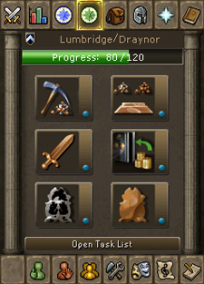

")
Tasks
Introduction

Tasks

If you right-click on one of these Tasks you can choose to 'pin' it (a pinned task is denoted with a small + symbol). Pinning a Task like this means that it will always appear in this side interface, regardless of your location in RuneScape. You can change which Task you have pinned at any time, so it's a good way to remind yourself which Task you're currently working towards, among other things.
The Task List

Task Sets
Most Tasks belong to a set based on geographical location - e.g. the Lumbridge/Draynor set, the Karamja set. There are a handful of Tasks found within the Lumbridge area that are NOT considered to be part of the Lumbridge/Draynor set - these Tasks are intended for players new to RuneScape, to introduce them to certain aspects of the game. The other articles in this section of the Game Guide list the Tasks that belong to each set.
The symbols that denote each Task set are as follows:
| Ardougne |
|
| Falador |
|
| Fremennik Province |
|
| Karamja |
|
| Lumbridge/Draynor |
|
| Seers' Village |
|
| Varrock |
|
All Tasks also have a difficulty level. There are five difficulty levels of Task: Beginner, Easy, Medium, Hard and Elite.
- Beginner Tasks should be able to be completed by every player with relative ease.
- Easy Tasks might require some quests to be complete, but they will generally be low-level quests. Almost any player should be capable of completing all of the Easy Tasks.
- Medium Tasks may require a few more quests, be in more dangerous locations or require several of your skills to be advanced.
- Hard Tasks may not appear difficult at first glance, but they may require you to enter incredibly dangerous areas, to have completed high-level quests or to survive through all the horrors an area can throw at you, just to eat a kebab...
- Elite Tasks will ask for very high levels (often up in the 90s) or for a series of steps to be completed within a certain area. These will test all but the most experienced players, pushing your knowledge and skills to the extreme. The rewards, however, are more than worth it...
With the exception of the Lumbridge/Draynor set, all sets have Tasks ranging in difficulty from Easy to Elite. The Lumbridge/Draynor set instead has Beginner to Hard Tasks, as it's intended as an introduction to the system.
The symbols that denote each difficulty level are as follows:
| Beginner (blue) |
|
| Easy (green) |
|
| Medium (red) |
|
| Hard (white) |
|
| Elite (purple) |
|
Rewards
Each time you complete all of the Tasks in a set of the same level of difficulty, you will receive a message in your chat box congratulating you and reminding you who you should speak to (or what other criteria you must fulfil) in order to collect your reward. For example, if you complete all of the Beginner Tasks in the Lumbridge/Draynor set, you are eligible to collect the explorer's ring 1 reward. Then, once you complete all of the Easy Tasks in the Lumbridge/Draynor set, you can upgrade that reward to the explorer's ring 2.
You must earn the reward for the lower levels of difficulty within a set before you can claim the upgraded version of that reward. For example, if you complete all Medium Tasks in the Lumbridge/Draynor set, you must also have completed all Beginner and Easy Tasks in the same set to claim the reward for the Medium Tasks.
Each set offers a different item reward and one or more experience lamps, with their usefulness increasing with each difficulty level completed. Often, these rewards will allow you greater freedom in the area or provide you with new training areas restricted to those who have completed the tasks.
Note that the experience lamps you receive can be used on any skill, provided your current level in that skill is at least level 30 (for an Easy level lamp), level 40 (for a Medium level lamp), level 50 (for a Hard level lamp) or, depending upon how much experience it awards, anything from level 60 to level 90 (for an Elite level lamp).
There are a couple of additional bonuses in the form of a new music track unlocked for completing any 350 Tasks, and an emote for completing all Tasks (including those Tasks in the Lumbridge area that are not considered to be part of the Lumbridge/Draynor set).
So, rather than picking another inventory of flax, perhaps you'd prefer to explore the delights of the fair world of RuneScape?

|
More articles in Tasks
|
|
|
Further Help
If this article does not help you, you may find the following sections of the RuneScape site helpful:
|
|